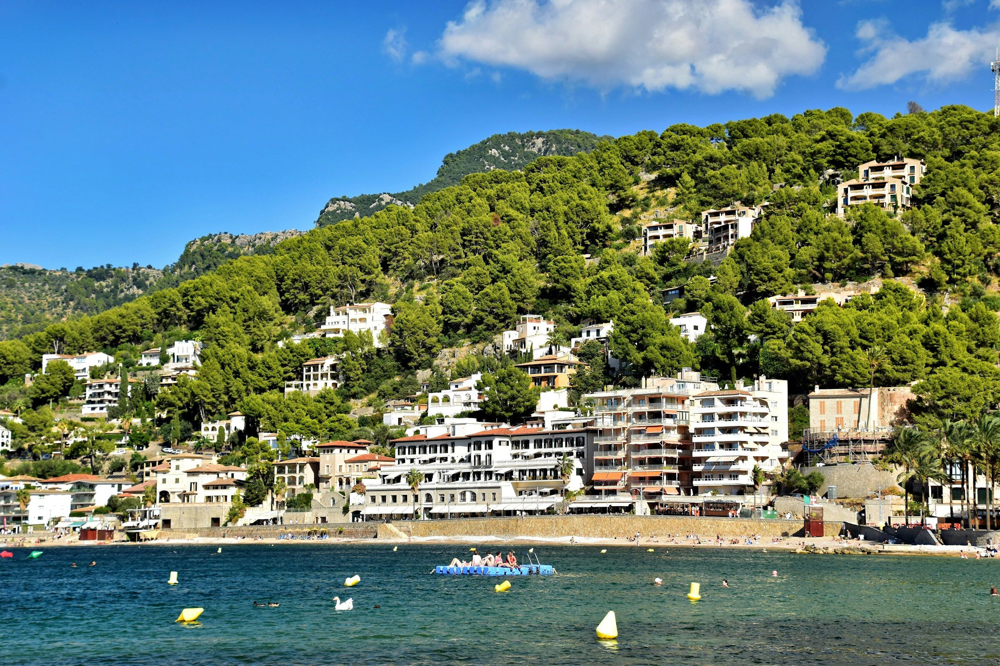
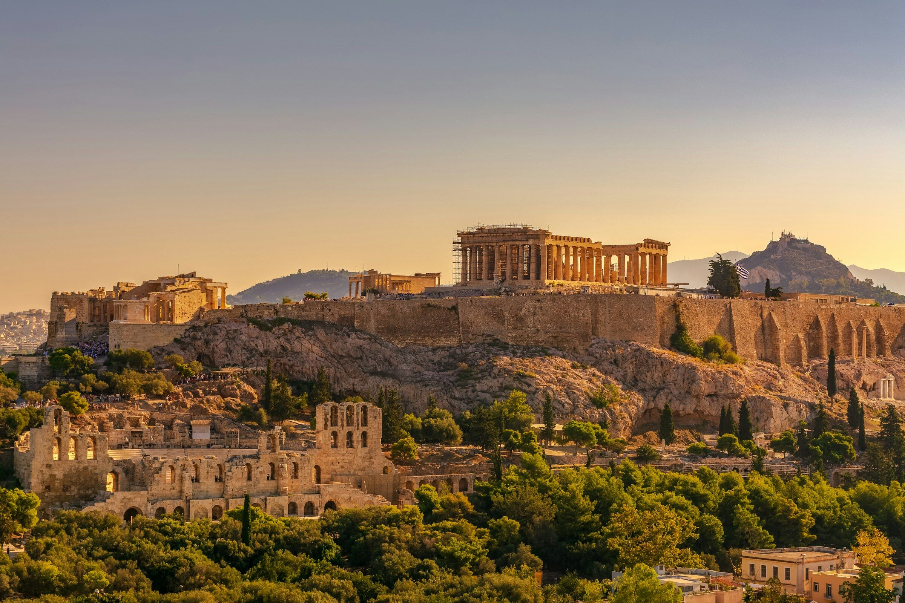
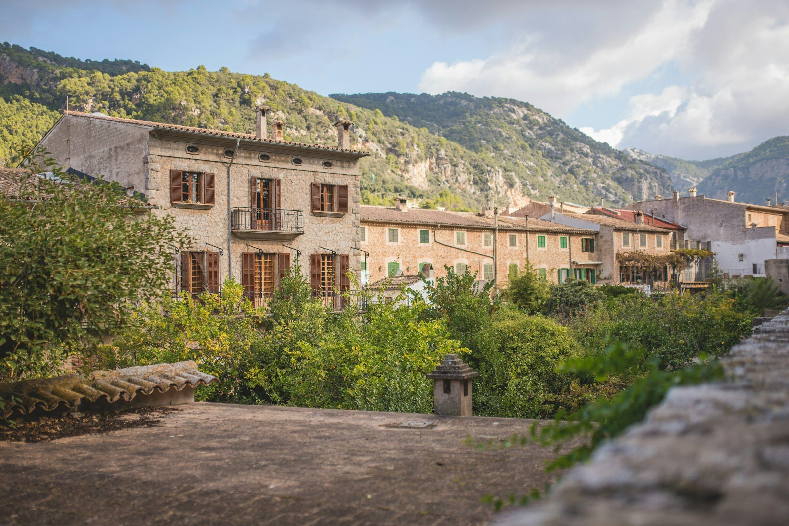

The Best Company Retreat Destinations in Europe
The best destinations in Europe for a company retreat or offsite, by type of team and budget: sun, surf, culture, nature and great value, with flight tips.

Europe is the easiest continent in the world for a company retreat: short flights, huge variety and venues for every budget. The best destination for you depends on three things: where your team flies from, what the retreat must achieve, and the season.
Here are our favourites, grouped by what they do best.
Sun, sea and easy flights
The Algarve, Portugal
Golden cliffs, boutique hotels and quintas, golf, boat trips and more than 300 days of sun a year. Faro has direct flights from most European cities. Ideal from March to November. Discover the Algarve.
Mallorca, Spain
Mountain villages, stone fincas and coves. Perfect for groups who want a mix of nature, culture and good food. Palma is one of Europe's best-connected airports. Discover Mallorca or read our Mallorca retreat guide.
Crete, Greece
Mountains, gorges and long sunny seasons, with authentic villages and an incredible food culture. Discover Crete.
City energy with culture
Lisbon, Portugal
Light, tiles, rooftops and great food, with the coast 30 minutes away. One of the easiest cities in Europe to reach. Discover Lisbon.
Barcelona, Spain
Architecture, beach and a buzzing food scene. Great for larger groups and sales kickoffs. Discover Barcelona.
Athens, Greece
History at every corner and the Athens Riviera half an hour from the centre. Discover Athens.

Surf and startup vibes
Ericeira, Portugal
A World Surfing Reserve 45 minutes from Lisbon airport, with surf-friendly hotels, workshops by the ocean and fresh fish in the harbour. Discover Ericeira or read our surf retreat guide.
Taghazout, Morocco
Year-round sun, surf and a relaxed atmosphere, a short flight from many European cities. Discover Taghazout.
Nature and calm
Madeira and the Azores, Portugal
Dramatic landscapes, levada walks, whale watching and mild weather all year. Madeira · the Azores.
Zakopane, Poland
Mountain lodges in the Tatras, hiking in summer and snow in winter. Discover Zakopane.
Tuscany, Italy
Rolling hills, villas and long lunches. Perfect for leadership retreats. Discover Tuscany.
Great value
Kraków, Poland
A beautiful old town, excellent food and some of the best value in Europe. Discover Kraków or read our Poland retreat guide.
Porto and the Douro, Portugal
A characterful city and a wine valley an hour away. Discover Porto.
Budapest and Prague
Grand architecture, thermal baths and great prices. Budapest · Prague.
Something different
Marrakech and the Agafay desert, Morocco
Riads, desert camps under the stars and a short flight from Europe. Discover Marrakech or read our Morocco offsite guide.
How to choose
- Map your airports first. Direct flights for everyone beat a cheaper venue with connections.
- Match the season. Southern Europe is best in spring and autumn; cities work all year.
- Match the goal. Strategy needs calm; celebration needs energy.
See every destination on our company retreats page, estimate your budget with the calculator, or talk to our expert to get 3 tailored proposals, flights included.
Frequently asked questions
What is the best country in Europe for a company retreat?
Portugal is hard to beat: short flights from most of Europe, sun for most of the year, excellent venues and great value. Spain, Greece and Italy are close behind.
What is the cheapest destination in Europe for a team offsite?
Poland, Hungary, the Czech Republic and northern Portugal offer some of the best value, especially Kraków, Budapest, Prague and Porto.
Where can we do a company retreat in winter in Europe?
The Canary Islands, Madeira, the Algarve and Morocco stay mild in winter. For snow, look at the Alps or Zakopane. See our winter offsite guide.
Let's plan your team's next retreat
Venue, programme, activities and every participant's flight, handled by one team. It starts with a call with our expert.
Keep reading
All articles
Greece for Company Retreats: Athens, Crete, Peloponnese or the Cyclades?
Planning a company retreat in Greece? Compare Athens and the Riviera, Crete, the Peloponnese and the Cyclades, with activities, seasons and budget tips.

Mallorca Company Retreat Guide: Fincas, Villages and Coves
How to plan a company retreat in Mallorca: where to stay, the best areas, team activities, ideal seasons and what it costs per person, flights included.

Portugal for Company Retreats: Lisbon, Algarve, Ericeira, Porto
Why Portugal is Europe's favourite retreat destination, and how to choose between Lisbon, the Algarve, Ericeira, Porto, the Douro, Madeira and the Azores.